Overview
Ballbots move in any direction, but their design trades off stability, transmission and construction. This work develops a compact, self-stabilising ballbot with three Mecanum wheels, built for future multi-robot use, and asks what a family of similar ballbots must provide to share one control design.
A symbolic, generalised kinematic model covers wheel counts, positions and roller angles. It describes how motor speed and torque reach the ball, supports balanced and task-specific layouts within motor limits, and shows which installation errors matter most, so that a ballbot's handling becomes measurable. Five builds led to the prototype MK5; on it, a separate tilt-correction map returned the robot upright in 18 of 18 matched trials, against 3 of 18 for a shared map.
Controllers were learned in Webots and then MuJoCo. On a family of 672 simulated bodies, one analytic controller closed 69% of the gap between doing nothing and perfect tracking on 224 evaluation bodies when each body supplied its transmission map, against 18% with a nominal map. Each robot of such a family needs to supply only the map computed from its design angles; transfer to hardware is the next step.
The robot
Five builds
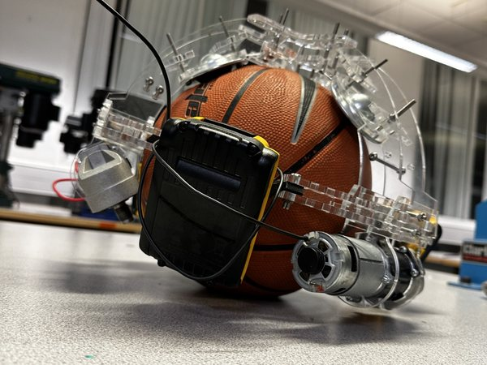
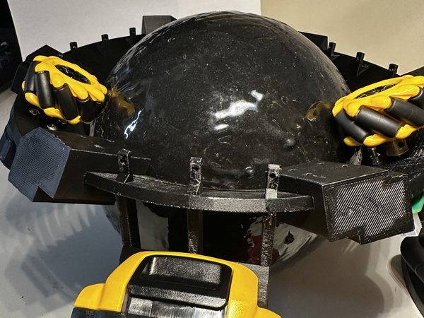
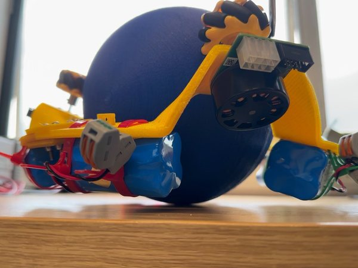
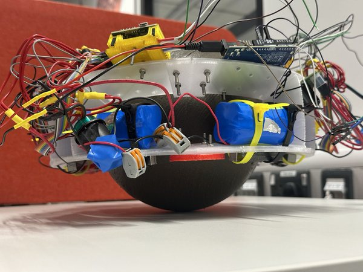
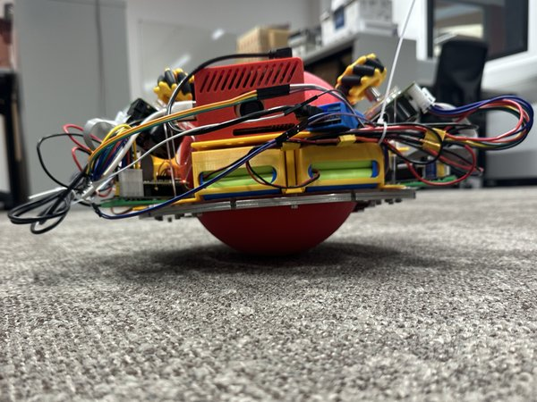
The build
MK5 combines several manufacturing processes. The motor holders are laser-cut from acrylic and bent over 3D-printed moulds to set the wheel elevation; the wheel azimuths are set by the holes of a stainless-steel ring; the drive ball is printed in one piece, with a PLA inner layer for stiffness and a TPU 90A outer layer for friction. The aim is that the built robot keeps the geometry the controllers assume. The assembled robot weighs 4.99 kg, against almost 9 kg for MK1, and is about 300 mm across, so two robots side by side fit a 762 mm doorway.
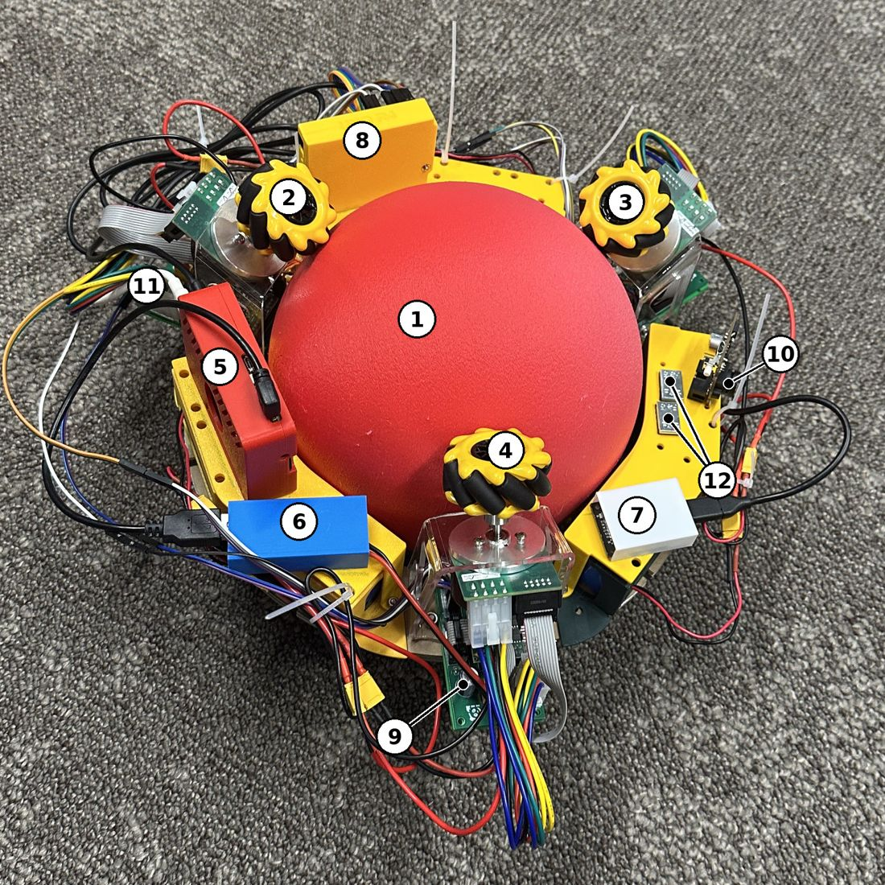
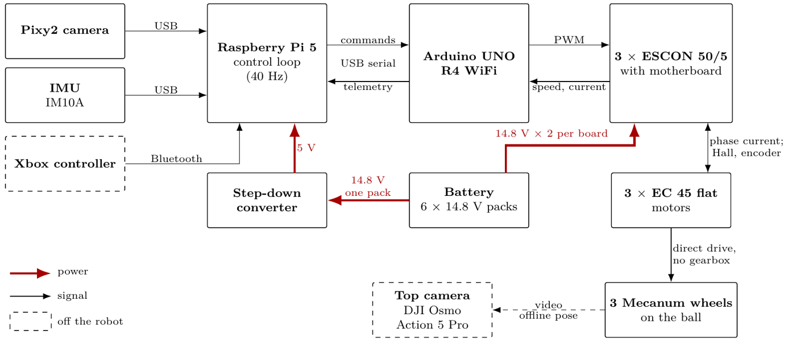
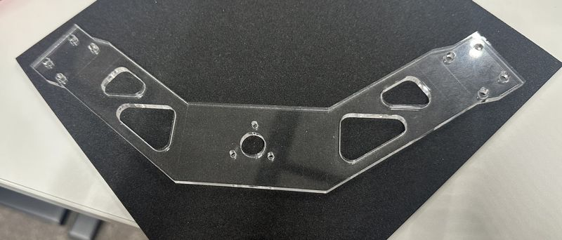
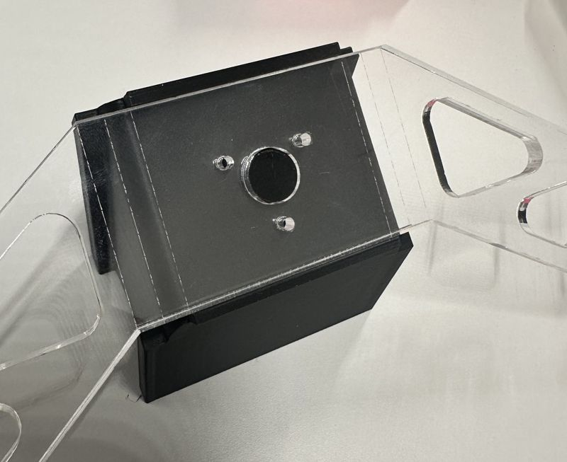
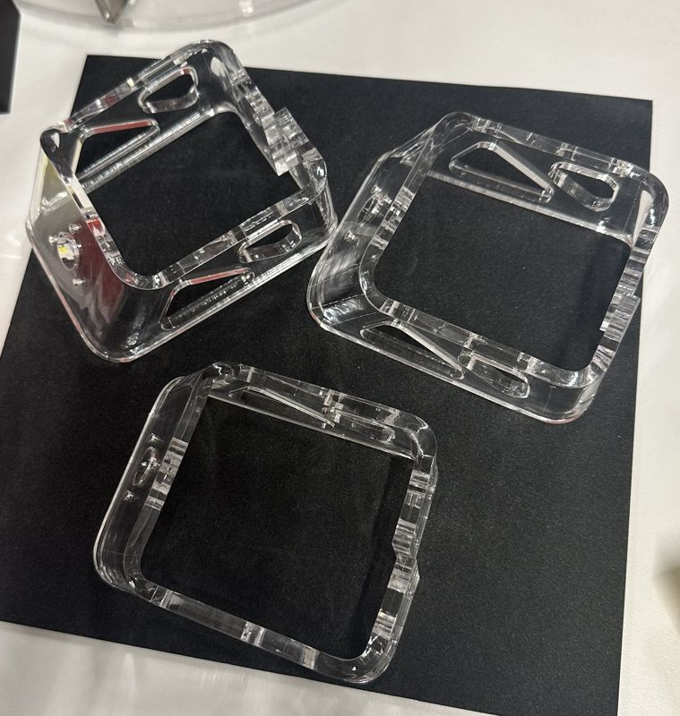
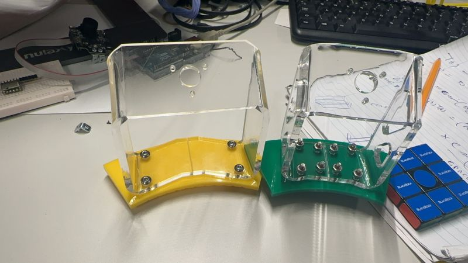
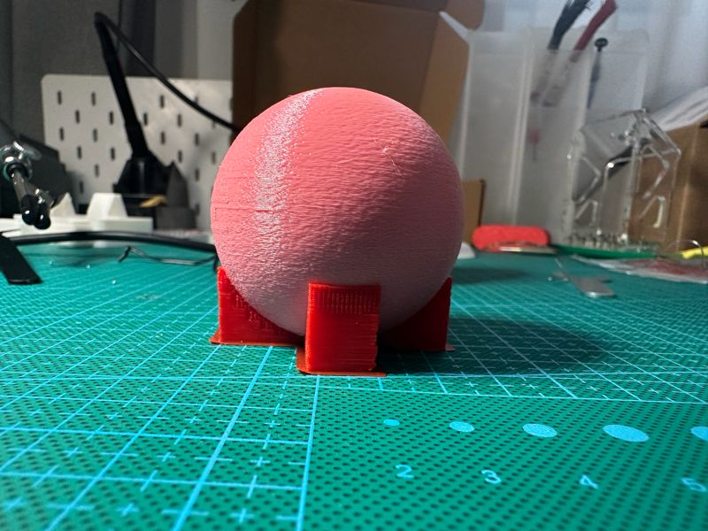
The model
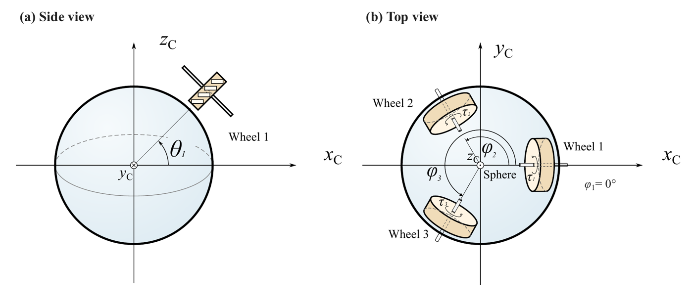
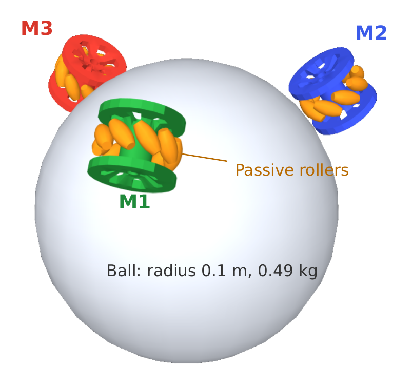
Each wheel is placed by its azimuth φ and contact elevation θ and carries rollers at angle γ. The symbolic model maps motor speeds and torques through these angles to the motion of the ball, for any number of wheels.
Choosing the geometry
One control design, many bodies
Learning in simulation
Manuscripts in preparation
- Canonical Transmission Maps for Task-Specialised Morphology Design of Multiwheel Ballbots. D. Si, J. Hedley, H. Wu.
- Shared Actuators Need Not Share Coordinates: Role-Factorized Allocation on a Mecanum Ballbot. D. Si, J. Hedley.
- When Full-Rank Geometry Is Not Enough: Body-Local Response Commissioning Across Ballbot Morphologies. D. Si, J. Hedley.
- Goal Representation and Hindsight Replay for Webots Ballbot Control: A Controlled Factorial Study. D. Si, J. Hedley.
- Doing Nothing Scores Well: A Paired Zero-Action Protocol for Auditing Finite-Horizon Robot Control Benchmarks. D. Si.